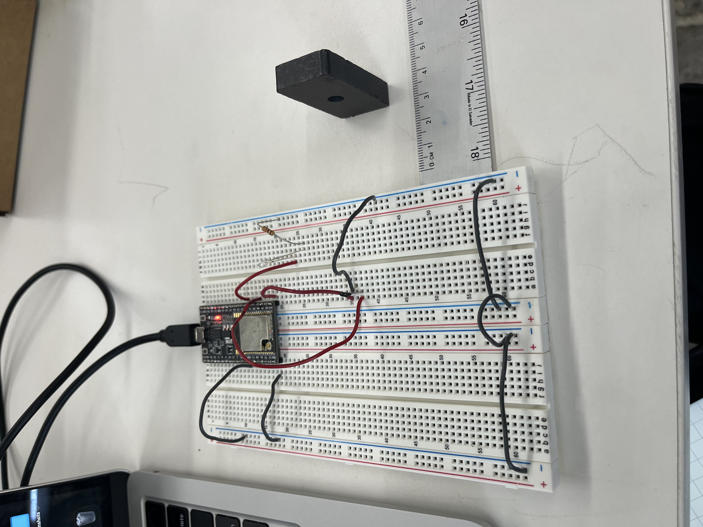
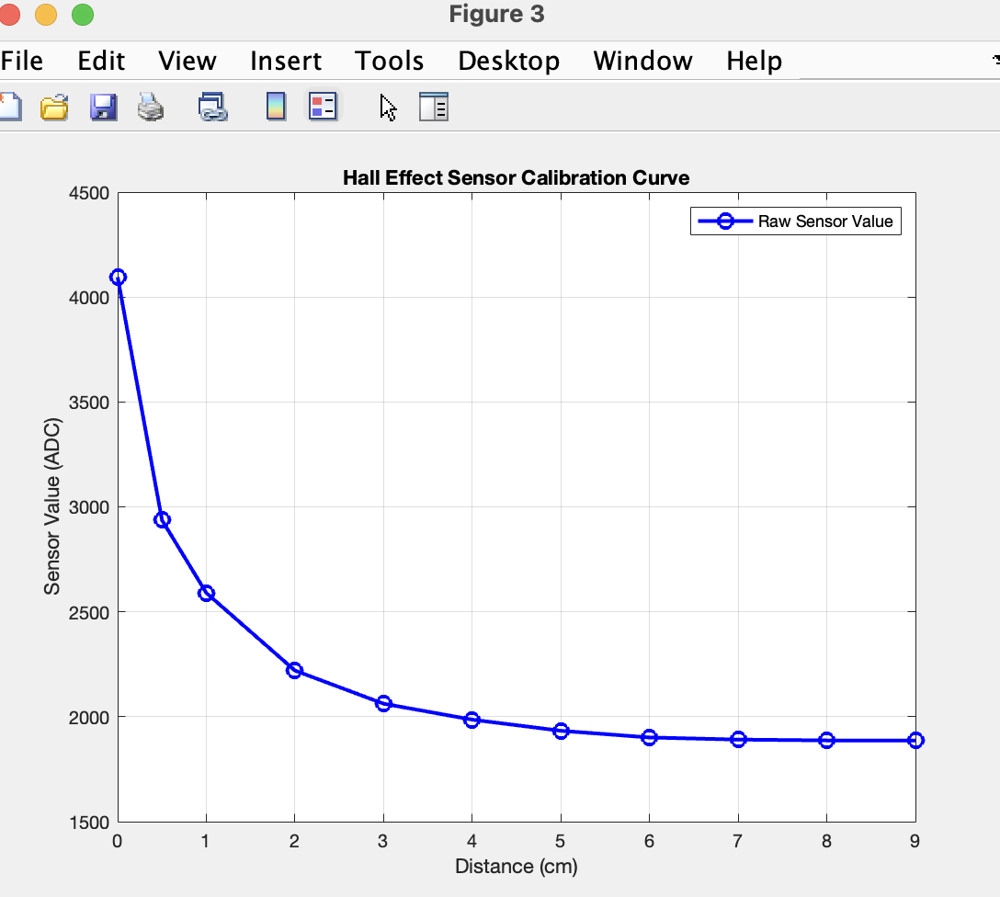

<div class="textcontainer">
<p class="margin"> </p>
<h3>Week 6: Electronic Inputs</h3>
<h4 class="title">Assignment 1: Capactive Sensor<h4>
<p>
For this assignment I made a water level sensor. I used two copper rods close to
each other, taped to a plastic container and connected to arduino. When the water. Air and water have different dielectric
constants, so the capacitance of the sensor changes when the water level changes. <br>
I did not code anything from scratch, I simply used the code on the course website (see below) and
read values for different water levels in the serial monitor. <br>
</p>
<P>
Initially, I had the two electrodes connected directly to the arduino, but quickly run into an
erroer. The Tx value without water was about 31,000 but it jumped to 491,500
when I added water to the 0.125 level and stayed there till the cup was full. This
was not the expected behavior. I had to use a 3M ohm resistor to stabilize the values. I divided the cup into 8 fairly
equal parts with smallest being 0 and biggest 1 and made the plot below in matlab. <br>
<br>I do not have a model for this data but it does not seem to follow any pattern. It could be the sensors
were very inaccurate, or maybe taking more
data points could have generated a better plot. <br>
</P>
<p>
Images of the setup:
<div style="display: flex; justify-content: center; gap: 20px; max-width: 100%;">
<div style="text-align: center; max-width: 350px;">
<img src="EmptyCup.jpg" alt="Capacitive Sensor" style="width: 100%; border-radius: 8px;">
<p style="margin-top: 8px; font-size: 14px; color: #c9c9c9;">Empty Cup</p>
</div>
<div style="text-align: center; max-width: 350px;">
<img src="FullCup.jpg" alt="Capacitive Sensor" style="width: 100%; border-radius: 8px;">
<p style="margin-top: 8px; font-size: 14px; color: #c9c9c9;">Full Cup</p>
</div>
</div>
</p>
<p>
Arduino code:
</p>
<pre><code>
long result; //variable for the result of the tx_rx measurement.
int analog_pin = 32;
int tx_pin = 4;
void setup() {
pinMode(tx_pin, OUTPUT); //Pin 4 provides the voltage step
Serial.begin(9600);
}
void loop() {
result = tx_rx();
Serial.println(result);
}
long tx_rx(){ // Function to execute rx_tx algorithm and return a value
// that depends on coupling of two electrodes.
// Value returned is a long integer.
int read_high;
int read_low;
int diff;
long int sum;
int N_samples = 100; // Number of samples to take. Larger number slows it down, but reduces scatter.
sum = 0;
for (int i = 0; i < N_samples; i++){
digitalWrite(tx_pin,HIGH); // Step the voltage high on conductor 1.
read_high = analogRead(analog_pin); // Measure response of conductor 2.
delayMicroseconds(100); // Delay to reach steady state.
digitalWrite(tx_pin,LOW); // Step the voltage to zero on conductor 1.
read_low = analogRead(analog_pin); // Measure response of conductor 2.
diff = read_high - read_low; // desired answer is the difference between high and low.
sum += diff; // Sums up N_samples of these measurements.
}
return sum;
} // End of tx_rx function.
</code></pre>
<br>
<p>
Matlab Code:
</p>
<pre><code>
% Data
water_level = [0, 1/8, 1/4, 3/8, 1/2, 5/8, 3/4, 7/8, 1]; % Water level in fractions
tx_value = [1800, 6900, 7000, 10000, 10600, 10700, 9800, 10900, 11000]; % TX readings
% Plot
figure;
plot(water_level, tx_value, '-o', 'LineWidth', 2, 'MarkerSize', 8, 'MarkerFaceColor', 'r');
% Labels and Title
xlabel('Level of Water in Cup');
ylabel('Approximate TX Value');
title('Capacitive Sensor TX Value vs. Water Level');
grid on;
% Set axis limits
xlim([0 1]);
ylim([min(tx_value)-500, max(tx_value)+500]);
% Show data points
for i = 1:length(water_level)
text(water_level(i), tx_value(i), sprintf(' %d', tx_value(i)), 'FontSize', 10);
end
</code></pre>
<div style="text-align: center; max-width: 700px; margin: 0 auto;">
<img src="CapacitivePlot.png" alt="Screenshot of box parameters in fusion"
style="width: 100%; border-radius: 8px; display: block; margin: 0 auto;">
<p style="margin-top: 8px; font-size: 14px; color: #c9c9c9;">Capacitive Sensor Plot</p>
</div>
<div style="text-align: center; max-width: 700px; margin: 0 auto;">
<img src="Snapshot_Of_Serial_Plotter.png" alt="Image of serial plotter output"
style="width: 100%; border-radius: 8px; display: block; margin: 0 auto;">
<p style="margin-top: 8px; font-size: 14px; color: #c9c9c9;">Serial plotter Output</p>
</div>
<h4 class="title">Assignment 2: Use + Calibrate Another Sensor</h4>
<P>
In this part I will be calibrating a 324 hall effect sensor. I will be using this for my
final project and would like to know the optimal distance the magnet should be from
the sensor. <br> I will use a free magnet at different fixed distances to calibrate the sensor
then attach a smaller magnet to a wheel in a rotating DC motor to start calculating speed
then get this out put to an OLED screen.
<h3 class="title">Hall Effect Sensor Calibration</h3>
<p>
To determine the relationship between distance and sensor output, I placed a
stationary magnet at various distances from the Hall effect sensor.
I then recorded the sensor readings and ploted the output on matlab. The relationship
is not linear but an increase in distance from the sensor leads to a decrease in sensor output.
<br> Here is the arduino and Matlab code:
</p>
<!-- Code Snippets -->
<p>
ESP32 Code for Reading Sensor Output:
<pre><code>
const int hallPin = 34;
void setup() {
Serial.begin(115200);
}
void loop() {
int sensorValue = analogRead(hallPin); // Read sensor voltage
float voltage = sensorValue * (3.3 / 4095.0); // Convert to voltage
Serial.print("Sensor Value: ");
Serial.print(sensorValue);
Serial.print(" | Voltage: ");
Serial.println(voltage, 3); // Print voltage with 3 decimal places
delay(500); // Read every 500ms
}
</code></pre>
</p>
<p>MATLAB Code for Plotting Calibration Data:
<pre><code>
% Data
distance = [0, 0.5, 1, 2, 3, 4, 5, 6, 7, 8, 9]; % Distance cm
sensor_value = [4095, 2937, 2590, 2220, 2062, 1986, 1933, 1901, 1891, 1887, 1886]; % ADC readings
% Plot
figure;
plot(distance, sensor_value, 'bo-', 'LineWidth', 2, 'MarkerSize', 8);
xlabel('Distance (mm or cm)');
ylabel('Sensor Value (ADC)');
title('Hall Effect Sensor Calibration Curve');
grid on;
legend('Raw Sensor Value');
</code></pre>
</p>
<p>
And here are the images of the setup and the plot:
</p>
<!-- Images -->
<div style="display: flex; justify-content: center; gap: 20px; max-width: 100%;">
<div style="text-align: center; max-width: 350px;">

<p style="margin-top: 8px; font-size: 14px; color: #c9c9c9;"> BreadBoard and Magnet Setup </p>
</div>
<div style="text-align: center; max-width: 350px;">
<img src="Serial Monitor.jpg" alt="Picture of printed output in arduino" style="width: 100%; border-radius: 8px;">
<p style="margin-top: 8px; font-size: 14px; color: #c9c9c9;">Printed OutPut</p>
</div>
</div>
<div style="text-align: center; max-width: 700px; margin: 0 auto;">

<p style="margin-top: 8px; font-size: 14px; color: #c9c9c9;">Matlab Plot</p>
</div>
<h4 class="title">Calculating speed</h4>
<p>
First, I designed a very simple wheel in fusion 360 and laser cut it. The wheel could rotate on the DC motor
and had radius of about 7.5 cm. It also had a tiny hole 5 cm from the center where I stuck a
a small round magnet. I then used the arduino code below to calculate the revolutions per minute of
the wheel and the equivalent speed. See video below for set up and serial monitor output. <br>
</p>
<div>
<p>Arduino Code for Speed Calculation:</p>
<pre><code>
// Forward declaration of the interrupt handler function
void IRAM_ATTR hallInterruptWrapper();
class WheelSpeedSensor {
private:
int hallPin;
volatile unsigned long lastTime;
volatile unsigned long interval;
const float radius = 0.05; // 5 cm in meters
unsigned long lastPrintTime = 0;
const unsigned long minValidInterval = 5000; // Ignore intervals shorter than 5ms (5000 μs)
const int filterSize = 5; // Moving average filter size
float rpmBuffer[5] = {0}; // Store last 5 RPM values
int bufferIndex = 0;
public:
// Constructor
WheelSpeedSensor(int pin) {
hallPin = pin;
lastTime = 0;
interval = 0;
}
// Interrupt function
void IRAM_ATTR hallInterrupt() {
unsigned long currentTime = micros();
unsigned long newInterval = currentTime - lastTime;
// Ignore very small intervals (noise)
if (newInterval > minValidInterval) {
interval = newInterval;
lastTime = currentTime;
}
}
// Initialize sensor
void begin() {
pinMode(hallPin, INPUT);
attachInterrupt(digitalPinToInterrupt(hallPin), hallInterruptWrapper, FALLING);
}
// Compute RPM and speed with smoothing
void update() {
if (interval > 0) {
float T = interval / 1e6; // Convert to seconds
float RPM = 60.0 / T;
float speed = (2 * 3.1416 / T) * radius;
// Apply Moving Average Filter to RPM
rpmBuffer[bufferIndex] = RPM;
bufferIndex = (bufferIndex + 1) % filterSize;
float smoothedRPM = 0;
for (int i = 0; i < filterSize; i++) {
smoothedRPM += rpmBuffer[i];
}
smoothedRPM /= filterSize;
// Print every 500ms
if (millis() - lastPrintTime >= 500) {
Serial.print("RPM: ");
Serial.print(smoothedRPM);
Serial.print(" | Speed: ");
Serial.print(speed, 3);
Serial.println(" m/s");
lastPrintTime = millis();
}
}
}
};
// Global instance of the class
WheelSpeedSensor wheelSensor(34);
// Define the actual interrupt wrapper function
void IRAM_ATTR hallInterruptWrapper() {
wheelSensor.hallInterrupt();
}
void setup() {
Serial.begin(115200);
wheelSensor.begin();
}
void loop() {
wheelSensor.update();
}
</code></pre>
</div>
<p>
And here is a video of the setup and the output in the serial monitor:
</p>
<div style="text-align: center; max-width: 400px; margin: 0 auto;">
<video width="100%" height="auto" controls>
<source src="Video1.mp4" type="video/mp4">
Your browser does not support the video tag.
</video>
<p style="margin-top: 8px; font-size: 14px; color: #c9c9c9;">Video of the setup</p>
</div>
<p>
This output is not completely accurate and this could be because of false
triggers. The wheel is too small and the hall effect sensor may be triggered
several times in a single revolution. I will use a bigger wheel when transferring this this data
to an OLED screen.
</p>
<h4 class="title">Displaying output on OLED screen</h4>
<p>
I had to install Adafruit_GFX, Adafruit_SSD1306 from github zips and Adafruit_BusIO from inbuilt arduino
libraries to get the OLED screen to work. I then connected the VCC pin to 3.3V, GND to GND, SDA to pin 21 and SCL to pin 22. Then
<br> Additonally, I increased the wheel size by double to reduce false positives in the hall effect sensor.
I used the arduino code below to display the speed on the OLED screen and serial monitor:
</p>
<div>
<pre><code class="language-cpp">
#include &lt;Wire.h&gt;
#include &lt;Adafruit_GFX.h&gt;
#include &lt;Adafruit_SSD1306.h&gt;
// OLED setup
#define SCREEN_WIDTH 128
#define SCREEN_HEIGHT 64
Adafruit_SSD1306 display(SCREEN_WIDTH, SCREEN_HEIGHT, &Wire, -1); // No reset pin
// Forward declaration
void IRAM_ATTR hallInterruptWrapper();
class WheelSpeedSensor {
private:
int hallPin;
volatile unsigned long lastTime = 0;
volatile unsigned long interval = 0;
const float radius = 0.10; // 10 cm in meters
unsigned long lastPrintTime = 0;
static const unsigned long minValidInterval = 5000; // Ignore pulses < 5ms
static const int filterSize = 5;
float rpmBuffer[filterSize] = {0};
int bufferIndex = 0;
public:
WheelSpeedSensor(int pin) : hallPin(pin) {}
void IRAM_ATTR hallInterrupt() {
unsigned long currentTime = micros();
unsigned long newInterval = currentTime - lastTime;
if (newInterval > minValidInterval) {
interval = newInterval;
lastTime = currentTime;
}
}
void begin() {
pinMode(hallPin, INPUT);
attachInterrupt(digitalPinToInterrupt(hallPin), hallInterruptWrapper, FALLING);
}
void update() {
unsigned long timeSinceLastPulse = millis() - (lastTime / 1000);
// Show zero speed if no pulse in 1 second
if (timeSinceLastPulse > 1000) {
if (millis() - lastPrintTime >= 500) {
display.clearDisplay();
display.setCursor(0, 0);
display.setTextSize(1);
display.println("RPM: 0");
display.println("Speed: 0.000 m/s");
display.display();
Serial.println("RPM: 0 | Speed: 0.000 m/s");
lastPrintTime = millis();
}
return;
}
if (interval > 0) {
float T = interval / 1e6;
float RPM = 60.0 / T;
float speed = (2 * 3.1416 / T) * radius;
rpmBuffer[bufferIndex] = RPM;
bufferIndex = (bufferIndex + 1) % filterSize;
float smoothedRPM = 0;
for (int i = 0; i < filterSize; i++) {
smoothedRPM += rpmBuffer[i];
}
smoothedRPM /= filterSize;
if (millis() - lastPrintTime >= 500) {
display.clearDisplay();
display.setCursor(0, 0);
display.setTextSize(1);
display.print("RPM: ");
display.println(smoothedRPM, 1);
display.print("Speed: ");
display.print(speed, 2);
display.println(" m/s");
display.display();
Serial.print("RPM: ");
Serial.print(smoothedRPM);
Serial.print(" | Speed: ");
Serial.print(speed, 3);
Serial.println(" m/s");
lastPrintTime = millis();
}
}
}
};
// Global instance
WheelSpeedSensor wheelSensor(34);
// Interrupt wrapper
void IRAM_ATTR hallInterruptWrapper() {
wheelSensor.hallInterrupt();
}
void setup() {
Serial.begin(115200);
Wire.begin(21, 22); // SDA, SCL
wheelSensor.begin();
if (!display.begin(SSD1306_SWITCHCAPVCC, 0x3C)) {
Serial.println(F("SSD1306 allocation failed"));
while (true); // Halt
}
display.clearDisplay();
display.setTextSize(1);
display.setTextColor(SSD1306_WHITE);
display.setCursor(0, 0);
display.println("Speed Monitor");
display.display();
delay(1000);
}
void loop() {
wheelSensor.update();
}
</code></pre>
</div>
<p>
And here is a video of the setup and the output in the OLED screen and serial monitor:
<div style="text-align: center; max-width: 300px; margin: 0 auto;">
<video width="100%" height="auto" controls>
<source src="Video2.mp4" type="video/mp4">
Your browser does not support the video tag.
</video>
<p style="margin-top: 8px; font-size: 14px; color: #c9c9c9;">Video of the setup and screen</p>
</div>
</p>
</div>